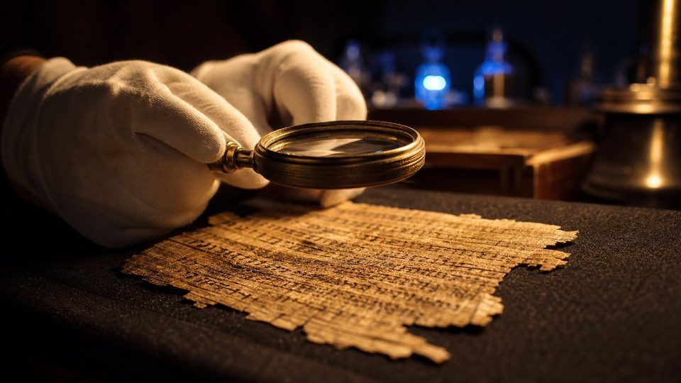

Canonique ou apocryphe : toujours dit
Chaque texte porte son étiquette : Canonique pour les livres reconnus dans le canon biblique, Apocryphe ou Non canonique pour les écrits anciens qui n'y ont pas été retenus.
VERBUM raconte, de façon claire et vérifiable, comment la Bible est parvenue jusqu'à nous : trois langues, environ quarante rédacteurs, quelque 1 600 ans de rédaction et 3 500 ans de transmission.
Ni murs ni billetterie, mais une ambition : vous donner les moyens de vérifier par vous-même que la Bible nous est parvenue pour l'essentiel intacte, malgré les siècles, les copies, les traductions et les destructions.
VERBUM est un musée virtuel. Il n'a ni murs ni billetterie, mais il poursuit une ambition : raconter, de façon claire et vérifiable, comment la Bible est parvenue jusqu'à nous.
Chaque salle s'appuie sur des sources publiées : catalogues de musées, éditions savantes, rapports de fouilles et bibliothèques numériques. Quand un manuscrit est consultable en ligne, un bouton « Voir l'original » vous y conduit directement : au Musée d'Israël, à la British Library, à la Bibliothèque vaticane, au Louvre ou à l'Université de Glasgow. Les chiffres sont arrondis et datés, et nous signalons les débats chaque fois que les spécialistes ne sont pas d'accord. Notre but n'est pas de vous demander de nous croire sur parole, mais de vous donner les moyens de vérifier par vous-même.
Quelques principes guident notre travail. Les livres reconnus dans le canon biblique portent l'étiquette canonique ; les écrits anciens qui n'y ont pas été retenus portent l'étiquette apocryphe, ou non canonique. Tout texte hébreu, grec, latin ou syriaque est accompagné de sa traduction française. Le nom divin, écrit en hébreu avec quatre lettres, est rendu par Jéhovah.
Les illustrations du musée sont des reconstitutions numériques : elles aident à imaginer les lieux et les objets, mais elles ne remplacent pas les photographies d'archives, vers lesquelles nous renvoyons chaque fois que possible. Enfin, nous distinguons toujours les faits établis des légendes, même lorsque celles-ci sont belles. Bonne visite, et bonne lecture.
Chaque texte porte son étiquette : Canonique pour les livres reconnus dans le canon biblique, Apocryphe ou Non canonique pour les écrits anciens qui n'y ont pas été retenus.
Tout passage en hébreu, en araméen, en grec, en latin ou en syriaque est immédiatement suivi de sa traduction française. Les textes courts sont donnés en entier, les textes longs sont résumés en détail.
Le Tétragramme hébreu est rendu par « Jéhovah », forme française traditionnelle du nom divin, au lieu d'être remplacé par un titre.
Les illustrations sont des créations numériques, marquées « Illustration » ou « Reconstitution ». Pour voir les objets réels, suivez les boutons « Voir l'original ».
Une belle histoire n'est pas une preuve. La salle 10 consacre une vitrine entière au tri entre le vrai et le faux, par exemple la prétendue prophétie de Voltaire.
Le nombre de manuscrits, de langues ou d'exemplaires évolue avec les découvertes. Chaque chiffre est arrondi, daté et renvoie à sa source.
יהוה
Les quatre lettres hébraïques du nom divin, Yod, Hé, Waw, Hé, que VERBUM rend partout par « Jéhovah », et non par un titre comme « Seigneur ».
Le Tétragramme · près de 7 000 occurrences dans la Bible hébraïque

Chaque salle s'appuie sur des sources publiées : catalogues de musées, éditions savantes, rapports de fouilles et bibliothèques numériques. Quand un manuscrit est consultable en ligne, un bouton « Voir l'original » y conduit directement. Les chiffres sont arrondis, datés et sourcés : par exemple, les statistiques de traduction de la Bible sont celles de septembre 2026.
Lorsque les spécialistes ne sont pas d'accord, nous le disons, avec l'étiquette Datation débattue et un encadré qui expose les positions en présence.
Chaque salle se visite seule, mais l'ordre suit le fil de la transmission, de l'écriture au Sinaï jusqu'aux laboratoires de 2026.